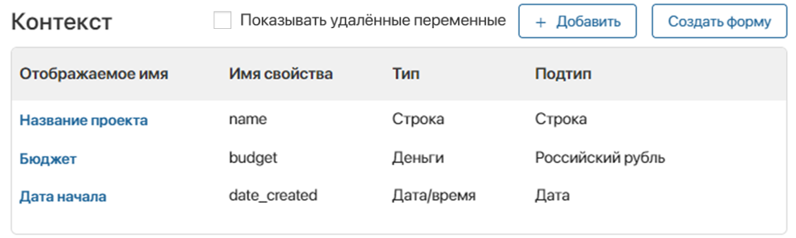
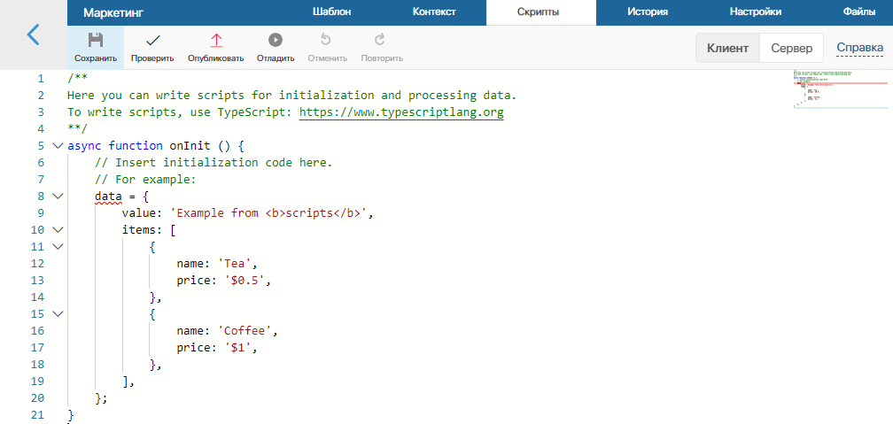
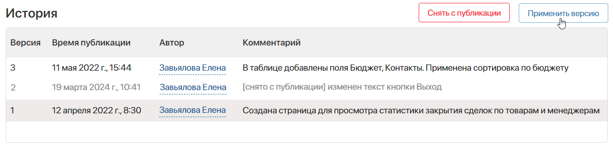
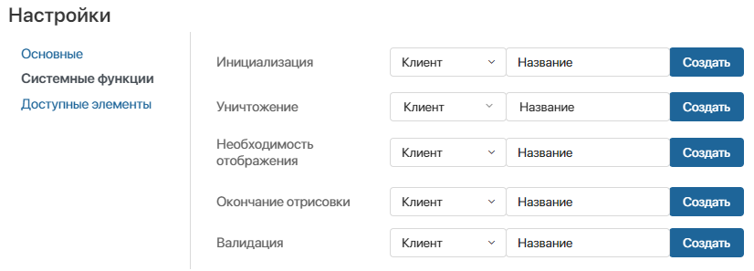
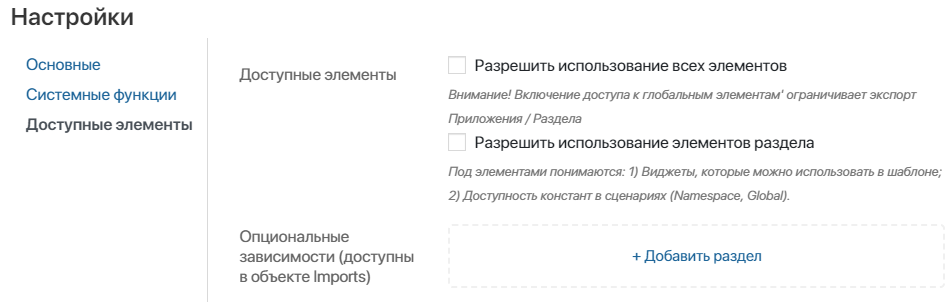
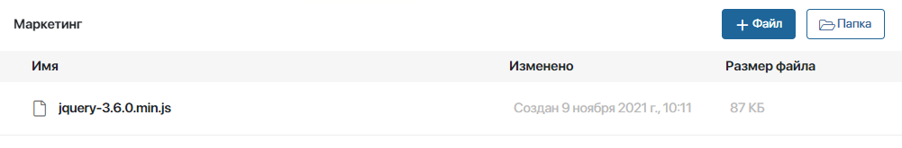

В дизайнере интерфейсов вы можете работать на вкладках Шаблон, Контекст, Скрипты, История, Настройки и Файлы.
Вкладка «Шаблон»
На вкладке Шаблон вы будете наполнять интерфейс виджетами и настраивать внешний вид страниц и форм.
Чтобы добавить виджет, перетащите его на поле для моделирования и настройте. Вы можете использовать стандартные виджеты, а также создавать свои собственные — пользовательские виджеты.
Стандартные виджеты группируются по типам. В зависимости от того, какой элемент системы вы настраиваете, страницу или форму, вам будет доступен определенный набор виджетов. Например, на страницы нельзя добавить виджеты для боковой панели формы. На формы, в свою очередь, нельзя добавить виджеты для страниц.
Чтобы создать пользовательский виджет, комбинируйте стандартные виджеты между собой. Например, вы можете добавить Панель с заголовком, в ней разместить Колонки, а в одну из колонок добавить Таблицу с отчётом. Сохраните виджет, и в дальнейшем вы сможете использовать его при настройке других интерфейсов.
О том, как разместить виджет, читайте в статьях «Добавление виджета на страницу» и «Шаблон формы».
Вкладка «Контекст»
На вкладке Контекст добавляются свойства, которые можно выносить на поле для моделирования, а также использовать при написании скриптов. Чтобы создать свойство, нажмите кнопку + Добавить и укажите его параметры. Подробнее о свойствах и о том, как их добавлять, читайте в статьях: «Вкладка „Контекст“», «Типы данных в системе», «Типы контекста».

Вкладка «Скрипты»
На этой вкладке вы можете написать скрипты для обработки данных, чтобы в дальнейшем использовать их в настройках виджетов. Например, при помощи скрипта можно отображать на странице актуальные курсы валют или создать заголовок страницы, который будет изменяться в зависимости от текущей даты.
Также вы можете настроить поведение виджетов, например, показать всплывающее окно при наведении курсора на определённую область формы или страницы. Подробнее об этом читайте в статье «Скрипты в виджетах».

Вкладка «История»
На этой вкладке можно просмотреть все опубликованные версии интерфейса с указанием автора, времени и комментария, оставленного при публикации. Также в списке отобразятся снятые с публикации версии.

Восстановить предыдущую версию
Вы можете восстановить любую предыдущую опубликованную версию интерфейса. Для этого выберите её в списке, нажмите кнопку Применить версию в правом верхнем углу страницы и подтвердите действие.
Настройки выбранной версии применятся к текущему черновику интерфейса, открытому на вкладке Шаблон. Все сохранённые, но не опубликованные изменения будут утеряны.
Вы можете отредактировать восстановленную версию формы или страницы, изменить расположение или настройки виджетов. Чтобы применить интерфейс и разрешить пользователям доступ к нему, повторно нажмите кнопки Сохранить и Опубликовать на верхней панели дизайнера.
Снять версию с публикации
Чтобы избежать запуска скрипта предыдущей версии интерфейса или исключить применение версии с ошибкой, её можно снять с публикации. Для этого выберите версию в списке и в правом верхнем углу страницы нажмите кнопку Снять с публикации.
Также вы можете снять с публикации все предыдущие версии интерфейса во время публикации новой версии.
Если вы хотите восстановить снятую с публикации версию, выберите её в списке и в верхнем правом углу страницы нажмите появившуюся кнопку Восстановить публикацию.
Вкладка «Настройки»
На этой вкладке вы можете:
- отключить отображение виджета с ошибками валидации;
- настроить размещение пользовательского виджета внутри разных интерфейсов;
- задать системные функции;
- разрешить использование в виджете:
- глобальных объектов;
- элементов текущего раздела;
- объектов и переменных из выбранных разделов или пользовательских модулей, с которыми установлены опциональные зависимости. Возможность подходит для разработки решений, так как в этом случае виджет можно экспортировать без ограничений.
Основные настройки
Опция Не отображать виджет с ошибками валидации используется для настройки формы создания или редактирования элемента приложения, задачи и стартового события, чтобы ошибки валидации отображались только под некорректно заполненными полями.
Когда опция отключена, вверху формы отображается виджет, который содержит список всех допущенных ошибок.

Настройка пользовательского виджета
При создании пользовательского виджета на вкладке Настройки > Основные можно управлять его размещением внутри других интерфейсов.
По умолчанию пользовательский виджет можно добавить только на основную часть формы. Вы можете включить следующие опции:
- Отображать виджет в заголовке с кнопками в формах — установите флажок, чтобы разрешить размещение виджета на верхней панели любой формы;
- Отображать виджет в боковой панели — установите флажок, чтобы выносить виджет на боковую панель любой формы.
Также можно настроить отображение виджета на поле для моделирования формы или страницы в дизайнере. Выбранный вид не влияет на функциональные возможности виджета после публикации настраиваемого интерфейса.
Доступные варианты:
- Полный — по умолчанию виджет выводится на поле для моделирования в том же виде, как будет отображаться после публикации.
- Вызывать функцию инициализации в конструкторе — по умолчанию в виджете активируется функция инициализации, которая содержит скрипты и позволяет, например, отправлять запросы на сервер для получения данных.
В режиме изменения формы на сервере может быть недостаточно данных и скрипты будут выполняться с ошибкой. Чтобы это не влияло на отображение виджета и работу дизайнера, снимите флажок с опции;
- Выводить только название виджета — в дизайнере отображается только название виджета, чтобы обозначить его расположение на форме. Можно компактно размещать виджеты на поле для моделирования и быстро переходить к их настройкам;
- Отдельный виджет — при выборе этого вида появится кнопка Создать форму. Нажмите на неё и создайте специальную форму виджета, которая будет отображаться вместо исходной при моделировании формы или страницы. Если отдельная форма виджета была создана ранее, для её настройки в дизайнере интерфейсов нажмите Редактировать форму.
Это удобно, если виджет содержит, например, текстовое наполнение и другие виджеты. В этом случае на шаблоне можно представить виджет схематично. Специальная форма настроена, например, для виджета Модальное окно.
Системные функции
Здесь можно выбрать функции, которые вы хотите применить при отображении виджета или валидации формы. Указывать функции на этой вкладке необязательно.
По умолчанию выполняются следующие функции, если они заданы в скриптах:
- onInit() — при инициализации виджета;
- destroy() — при окончании работы виджета;
- canRender() — при проверке условий для отображения виджета;
- onLoad() — при завершении отрисовки виджета.
Вы можете заменить эти функции на другие, чтобы настроить выполнение дополнительных действий, например, загрузку и подготовку данных для отображения в виджете. Для этого выберите функцию или создайте её в поле Инициализация, Уничтожение; Необходимость отображения или Окончание отрисовки.
Также можно выбрать функцию для выполнения пользовательской валидации (проверки правильности заполнения формы). По умолчанию она не задана. В этой функции вы можете реализовать дополнительные проверки к уже существующим стандартным проверкам валидации при попытке сохранить форму. Например, задайте проверку значений полей формы.

Чтобы указать функцию из ваших скриптов, выберите Клиент или Сервер и укажите её название.
Вы можете перейти к созданию скрипта, нажав Создать. Затем задайте название функции и нажмите Сохранить. После этого перейдите на вкладку Скрипты, нажав Открыть. Подробнее о создании скрипта на стороне Клиент или Сервер читайте в статье «Скрипты в виджетах».
Доступные элементы
Здесь вы можете разрешить использование виджетов, настроенных на уровне раздела или компании, а также получить доступ к глобальным константам в скрипте.

- Доступные элементы — предоставьте доступ к дополнительным элементам других уровней:
- Разрешить использование всех элементов — установите флажок, чтобы включить доступ к константе Global и виджетам из других разделов. Тогда при написании скриптов можно использовать переменные, содержащиеся во всех разделах системы, и глобальные параметры. Обратите внимание, использование константы
Globalи виджетов других разделов делают недоступным экспорт приложения или раздела; - Разрешить использование элементов раздела — включите опцию, чтобы открыть доступ к константе Namespace и виджетам текущего раздела. Обратите внимание, обращение к объектам раздела в скрипте и использование виджетов раздела делают недоступным экспорт приложения;
- Разрешить использование всех элементов — установите флажок, чтобы включить доступ к константе Global и виджетам из других разделов. Тогда при написании скриптов можно использовать переменные, содержащиеся во всех разделах системы, и глобальные параметры. Обратите внимание, использование константы
начало внимание
Использование констант Global или Namespace в скриптах ограничивает экспорт компонентов системы. Подробнее об этом читайте в статье «Глобальные константы в скриптах».
конец внимание
- Опциональные зависимости (доступны в объекте Imports) — установите опциональные зависимости от выбранных разделов или пользовательских модулей. После этого в срипте виджета к указанным компонентам можно получить доступ с помощью константы Imports. Это позволяет экспортировать и импортировать приложение или раздел без ограничений.
Чтобы установить зависимость, нажмите + Добавить раздел и выберите раздел или пользовательский модуль. Затем в колонке Псевдоним задайте для него уникальное имя, которое будет использоваться в скрипте. Допустимы латинские буквы и цифры, для разделения слов можно использовать знак подчёркивания. По умолчанию в поле указывается код раздела или ID модуля.
начало внимание
Опциональные зависимости и константа Imports по умолчанию доступны в поставке SaaS, а также On‑Premises, начиная с версии системы 2024.2. В более ранних версиях администратору системы нужно включить фича-флаг allowScriptImportsDependencies. Подробнее об этом читайте в статьях «Изменение параметров On-Premises Enterprise» и «Изменение параметров On-Premises Standard».
конец внимание
Подробнее об использовании констант Global или Namespace в скриптах читайте в cправке ELMA365 TS SDK в статье «Глобальный контекст и изоляция». Использование константы Imports описано в статье «Опциональные зависимости».
Вкладка «Файлы»
На вкладке Файлы вы можете добавить библиотеки и пользовательские функции на языке JavaScript, чтобы обращаться к ним в клиентских скриптах.
